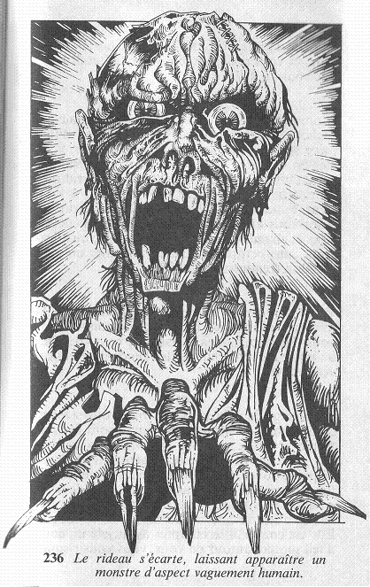

Assené de derrière le rideau, un coup violent vous atteint en pleine
poitrine et vous projette à terre. Vous perdez 2 points d'ENDURANCE, et
vous ajoutez 2 points à votre total de PEUR. Si vous êtes toujours
vivant,
vous vous remettez en un éclair sur vos pieds alors que le rideau
s'écarte
lentement, laissant apparaître un monstre d'aspect vaguement humain.

Sa peau est d'une couleur verdâtre, et bien que ses immenses yeux
semblent
vous fixer avec intensité, c'est au-delà de vous que son regard se
porte.
Sa mâchoire s'ouvre largement, découvrant une bouche à moitié plantée de
dents rougeâtres. Il est vêtu de loques. Il s'avance vers vous pour vous
attaquer. Et vous allez devoir combattre un ZOMBIE.
ZOMBIE HABILETÉ: 7 ENDURANCE : 6
Si vous êtes vainqueur, rendez vous ici.